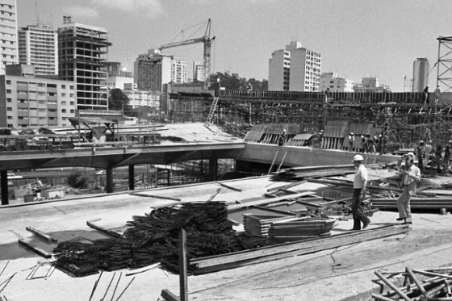
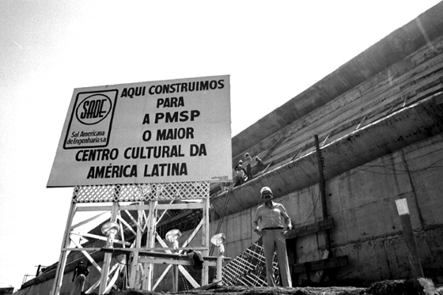

Instituição
Inaugurado em 1982, o Centro Cultural São Paulo é um dos primeiros centros culturais multidisciplinares
do
país. Lugar público por excelência, combina a oferta de programação e de serviços culturais – gratuitos
ou a
preços acessíveis – com a disponibilização de seus espaços e instalações para um uso plural, livre e
propositivo de seus frequentadores, provocando uma reflexão quanto ao papel dos espaços e serviços
públicos
na promoção da cultura, da criatividade, da cidadania e da autonomia em uma cidade com as dimensões de
São
Paulo.
O projeto, concebido nos anos 1970 por uma equipe de arquitetos liderados por Eurico Prado Lopes e Luiz
Telles, teve referências de grandes centros culturais multidisciplinares internacionais e contou com uma
extensa pesquisa sobre as condições de acesso e proximidade com a cultura da população paulistana. O
objetivo foi permitir o máximo de contato entre o frequentador e tudo o que é oferecido em seus 46.500
m².
Atualmente, o Centro Cultural São Paulo oferece:
Historia
A história do Centro Cultural São Paulo começa na década de 70, quando o terreno entre a rua Vergueiro e a Avenida 23 de Maio foi cedido para a prefeitura. Fruto das desapropriações ocasionadas pela construção do metrô, a área de aproximadamente 300 mil metros quadrados foi alvo de diversas especulações. Em julho de 1973, na administração de Miguel Colassuono, surgiu o Projeto Vergueiro, cujo objetivo era promover a urbanização do local, onde seriam construídos um complexo de escritórios, hotéis, um shopping center e uma grande biblioteca pública. O prazo para o término das obras era de cinco anos.
A inauguração
A lei de criação do Centro Cultural São Paulo, promulgada em 6 de maio de 1982, estabelecia que suas
funções incluíam: “planejar, promover, incentivar e documentar as criações culturais e artísticas;
reunir e organizar uma infra-estrutura de informações sobre o conhecimento humano; desenvolver pesquisas
sobre a cultura e a arte brasileiras, fornecendo subsídios para as suas atividades; incentivar a
participação da comunidade, com o objetivo de desenvolver a capacidade criativa de seus membros,
permitindo a estes o acesso simultâneo a diferentes formas de cultura; e oferecer condições para estudo
e pesquisa, nos campos do saber e da cultura, como apoio à educação e ao desenvolvimento científico e
tecnológico”.
Dois anos depois, a administração de Olavo Setúbal cancelou o Projeto Vergueiro, tendo que arcar com a indenização ao consórcio Prounb, que havia vencido a licitação para as obras. Do plano antigo restou somente a construção da biblioteca pública. Para isso, foi instalada uma comissão de estudos que contava com bibliotecários, professores e o arquiteto Aron Cohen. A ideia do grupo era construir uma biblioteca moderna em que o leitor tivesse livre acesso ao material, de forma que o objetivo não seria mais guardar a informação e sim escancará-la para o público. O arquiteto Eurico Prado Lopes venceu a concorrência aberta em 1976, e as obras tiveram início em 1978.
A gestão seguinte, do prefeito Reynaldo de Barros, resolveu reformular o projeto da
biblioteca e adaptá-lo ao de um centro cultural multidisciplinar nos moldes dos que estavam surgindo no
mundo todo como o Georges Pompidou, fundado em 1977 na cidade de Paris (França). O então secretário
municipal de cultura, Mário Chamie, alegava que a localização era ideal para a instalação de uma
instituição como essa. Além disso, argumentava-se que a obra era grande demais para abrigar somente uma
biblioteca. Ficou decidido, então, que o centro cultural contaria com cinema, teatro, espaço para
recitais e concertos, ateliês e áreas de exposições. Os arquitetos Eurico Prado Lopes e Luiz Telles
continuaram à frente do projeto.
A concepção do centro cultural foi baseada em extensa pesquisa
para entender o que significava o acesso à informação em um país como o Brasil. O edifício foi projetado
com o objetivo de facilitar ao máximo o encontro do usuário com aquilo que seria oferecido no centro
cultural. Dessa maneira, a arquitetura do prédio não obedeceu a padrões pré-estabelecidos, privilegiando
as dimensões amplas e as múltiplas entradas e caminhos.
A inauguração aconteceu no dia 13 de maio de 1982. O prefeito Reynaldo de Barros e o
secretário de cultura Mário Chamie receberam um grande público entre convidados, participantes da obra e
a população em geral. Após a cerimônia, os presentes percorreram as dependências do edifício, assistiram
a espetáculos musicais com o Coral Paulistano e com o pianista João Carlos Martins e puderam apreciar as
obras em exibição na Pinacoteca.
Em 1982, São Paulo possuía aproximadamente 8,5 milhões de habitantes, grande parte deles espalhada pela
periferia. A intenção do centro cultural que nascia era a de agregar essa população heterogênea,
fornecendo um espaço em que todos tivessem acesso aos mais variados gêneros culturais.
Mário Chamie destacou em seu discurso todo o trabalho que a obra demandou, apontando que “durante dois
anos, dez meses e um dia pelas manhãs, tardes e madrugadas adentro, trabalhou-se na construção desse
espaço”. Segundo Chamie, era necessário abrigar em um só espaço cultura popular e erudita, e todo tipo
de manifestação cultural de grupos ou comunidades as mais diversas, para refletir “toda essa igualdade
cultural brasileira que é feita justamente das diferenças”.
A construção
O Centro Cultural São Paulo começou a ser construído nos últimos anos da ditadura no Brasil. A proposta
de valorizar o aspecto multidisciplinar dos espaços e evitar a compartimentação foi alvo de muitas
polêmicas. Nas palavras do arquiteto Luiz Telles: “Ficávamos de prontidão, para ver com o que iam
implicar. Não que fôssemos subversivos, os outros é que eram retrógrados”. (para ler a entrevista
completa, clique aqui)
O projeto foi amplamente discutido na mídia, pois, além de apresentar conceitos inéditos como integração
e multidisciplinaridade, sua construção contou com alguns problemas de ordem técnica, já que apresentava
muitas inovações arquitetônicas. Pesquisas e experimentações tiveram que ser realizadas antes que se
pudesse chegar ao produto final. Para viabilizar as formas arrojadas pretendidas pelos arquitetos,
utilizou-se os mais variados materiais, como vidro, aço, concreto, acrílico, tijolo e tecido.
As estruturas mistas previstas no projeto fizeram com que conceitos tradicionais de execução tivessem
que ser modificados, dando lugar a novas técnicas muito específicas, em um processo que beirou o
artesanal. Durante a construção do prédio, Emilie Chamie, esposa do então secretário de cultura, Mário
Chamie, criou o logotipo da instituição. O desenho é a representação de uma junção de curvas e foi
pensado, segundo sua criadora, a partir das estruturas do prédio.
Redes Sociais